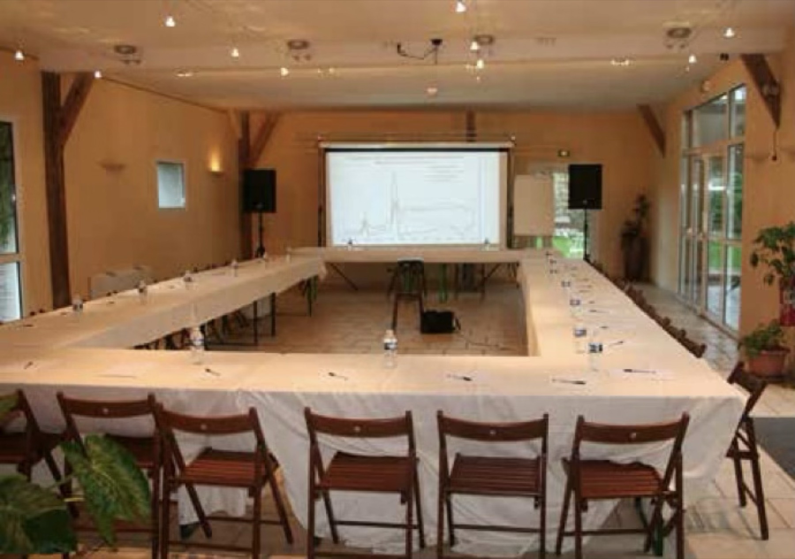

Opérationnel
Les salles de réception — 500 m²
Charpente apparente, lumière naturelle, configurations séminaire, atelier ou grande tablée. Le cœur des séjours d'équipe et des week-ends de création dès le jour un.